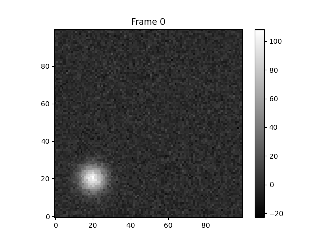
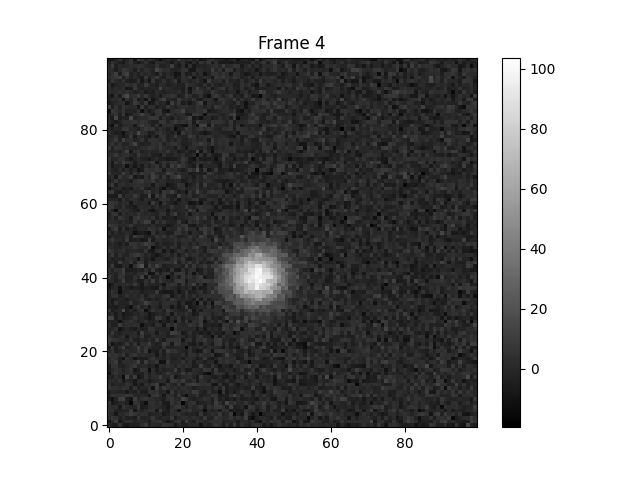

Note
Go to the end to download the full example code.
Basic Tracking Example
This example demonstrates how to use the soft package to detect and track features in synthetic data.
- 
- 
Running tracking...
Number of cores used: 1
Cleaning up
Detecting features...
Assigning unique IDs...
0it [00:00, ?it/s]
0it [00:00, ?it/s]
Total number of unique IDs: 1
Feature detection step ended
Associating features...
Starting the first round of association
No associated files found.
Cleaning up
Starting tabulation
No association or source files found for tabulation.
No dataframe found.
import numpy as np
import matplotlib.pyplot as plt
import soft.soft
import os
import shutil
import astropy.io.fits
# Create a temporary directory for data
data_dir = "temp_data"
os.makedirs(data_dir, exist_ok=True)
os.makedirs(os.path.join(data_dir, "00-data"), exist_ok=True)
os.makedirs(os.path.join(data_dir, "01-mask"), exist_ok=True)
os.makedirs(os.path.join(data_dir, "02-id"), exist_ok=True)
os.makedirs(os.path.join(data_dir, "03-assoc"), exist_ok=True)
# Generate synthetic frames
# We'll create a moving Gaussian blob
nx, ny = 100, 100
n_frames = 5
x, y = np.meshgrid(np.arange(nx), np.arange(ny))
for t in range(n_frames):
# Blob moves along x=y
cx, cy = 20 + t * 5, 20 + t * 5
sigma = 5
blob = 100 * np.exp(-((x - cx)**2 + (y - cy)**2) / (2 * sigma**2))
# Add some noise
noise = np.random.normal(0, 5, (ny, nx))
frame = blob + noise
filename = os.path.join(data_dir, "00-data", f"{t:04d}.fits")
astropy.io.fits.writeto(filename, frame, overwrite=True)
# Plot the first and last frame for visualization
if t == 0 or t == n_frames - 1:
plt.figure()
plt.title(f"Frame {t}")
plt.imshow(frame, origin='lower', cmap='gray')
plt.colorbar()
plt.show()
# Set tracking parameters
l_thr = 20 # Low threshold
h_thr = 50 # High threshold
min_size = 10
min_distance = 5
dx = 1.0
dt = 1.0
sign = "both"
separation = True
verbose = True
cores = 1
# Run tracking
print("Running tracking...")
soft.soft.track_all(data_dir, cores, min_distance, l_thr, h_thr, min_size, dx, dt, sign, separation, verbose)
# Check results
# Read the resulting dataframe
import pandas as pd
df_path = os.path.join(data_dir, "dataframe.json")
if os.path.exists(df_path):
df = pd.read_json(df_path)
print("Tracking results:")
print(df.head())
# Plot trajectory
plt.figure()
plt.title("Tracked Trajectory")
for label in df['label'].unique():
subset = df[df['label'] == label]
plt.plot(subset['X'], subset['Y'], 'o-', label=f'Label {label}')
plt.legend()
plt.xlabel("X pixel")
plt.ylabel("Y pixel")
plt.show()
else:
print("No dataframe found.")
# Cleanup
# shutil.rmtree(data_dir)
Total running time of the script: (0 minutes 0.611 seconds)